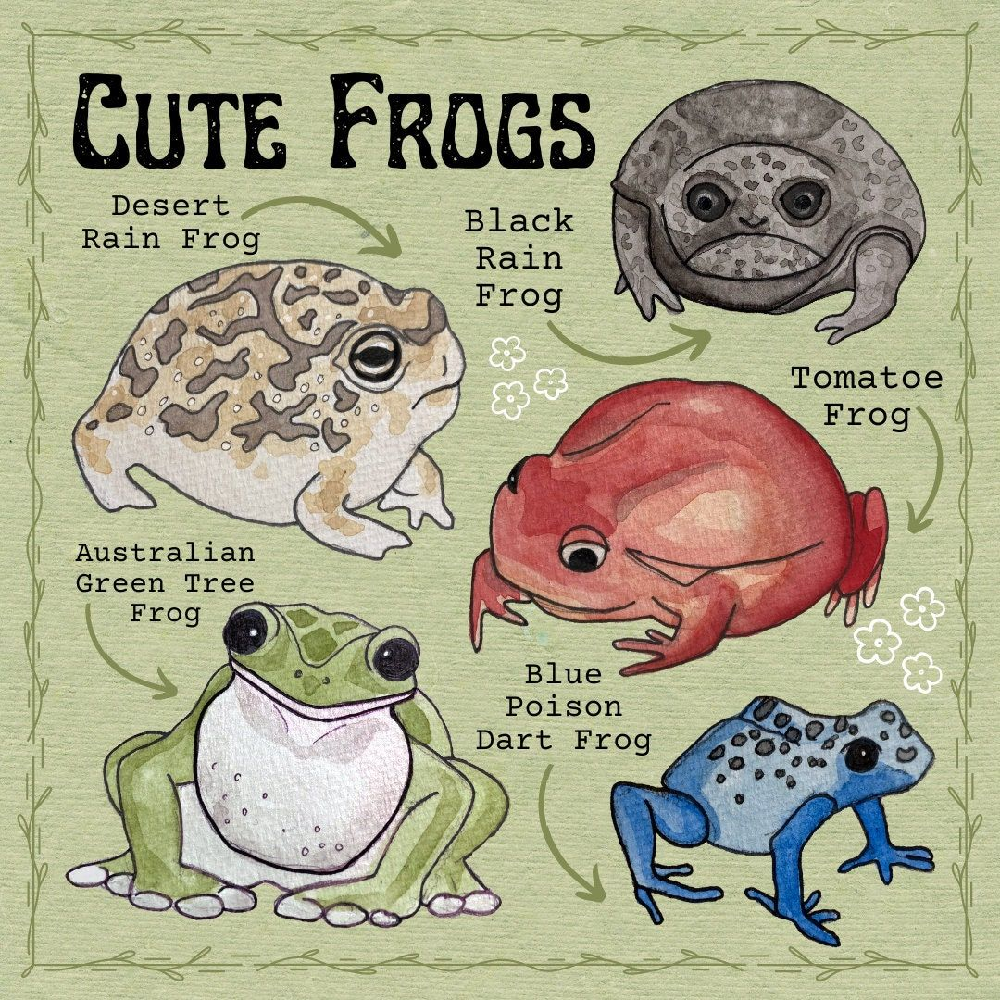

Тут ви знайдете наймиліших жабок з усього світу. Вони не просто так потрапили на цю сторінку — кожна з них має унікальну історію, яку ви можете дізнатися, просто клікнувши на неї. Запевняю, боляче їм не буде!
На цьому зображенні зібрані наймиліші та найкумедніші жабки з усього світу. Тут є і Дощова жаба з пустелі, яка виглядає як кругленька, засмагла булочка. Поруч сидить Чорна дощова жаба з вічно незадоволеним виразом обличчя, що робить її особливо чарівною. Яскраво-червона Помідорна жаба виглядає так, ніби вона щойно дозріла під сонячними променями. Також тут є Австралійська зелена деревна жаба, справжня модель з ідеальною поставою. І, звичайно, яскраво-синя Отруйна жаба-дротик, яка привертає увагу своїм неймовірним забарвленням. Кожна з цих жаб унікальна і незвичайна. Вони доводять, що світ земноводних може бути дуже милим і різноманітним.
Від Помідорної жаби, що виглядає як стиглий овоч, до Чорної дощової жаби, яка вміє бути дуже фотогенічною навіть у похмурому настрої, — вони чекають на вас!